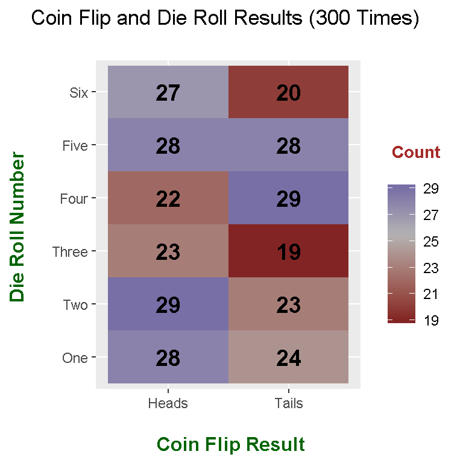

Hi there. I was playing around with the melt function from the reshape2 package in R. This melt function helps in converting data from a wide format to a long format which would be ready for data analysis, plotting, graphing, etc.
Here is some of the work I have come with.
To install the reshape2 package in R you can type in:
install.packages("reshape2")
To enable the functions in the reshape2 package use the line
library(reshape2)##
## Attaching package: 'reshape2'## The following objects are masked from 'package:data.table':
##
## dcast, melt
Once the reshape2 package is loaded into R, the melt function can be used to convert data from a wide format to a long format or convert tables into a (long) format which would be ready for analysis and plotting.
In this first example, I deal with a kangaroo measurements dataset from the faraway library in R.
The dataset called kanga from the faraway package is saved into kangaroo_data. Then the head() and tail() functions are used the preview the data.
# Example One: Wide Format Data To Long Format Data
# Get kangaroo measurements data from faraway package and save it to a variable.
kangaroo_data <- faraway::kanga
# Preview the data:
head(kangaroo_data)## species sex basilar.length occipitonasal.length palate.length
## 1 giganteus Male 1312 1445 882
## 2 giganteus Male 1439 1503 985
## 3 giganteus Male 1378 1464 934
## 4 giganteus Male 1315 1367 895
## 5 giganteus Male 1413 1500 969
## 6 giganteus Male 1090 1195 740
## palate.width nasal.length nasal.width squamosal.depth lacrymal.width
## 1 NA 609 241 180 394
## 2 230 629 222 150 416
## 3 NA 620 233 135 403
## 4 230 564 207 158 394
## 5 NA 645 247 161 426
## 6 NA 493 189 122 350
## zygomatic.width orbital.width .rostral.width occipital.depth crest.width
## 1 782 249 227 531 153
## 2 824 233 248 632 141
## 3 778 244 240 575 144
## 4 801 224 242 568 116
## 5 823 241 252 607 120
## 6 673 234 185 462 188
## foramina.length mandible.length mandible.width mandible.depth
## 1 88 1086 131 179
## 2 100 1158 148 181
## 3 107 1131 116 169
## 4 79 1090 132 189
## 5 99 1175 131 197
## 6 90 901 101 138
## ramus.height
## 1 591
## 2 643
## 3 610
## 4 594
## 5 654
## 6 476
The summary() function and the str() function is used to check some summary statistics and to check the variable types in the data.
# Summary and data structure:
summary(kangaroo_data)## species sex basilar.length occipitonasal.length
## fuliginosus:50 Female:75 Min. :1030 Min. :1121
## giganteus :50 Male :73 1st Qu.:1380 1st Qu.:1465
## melanops :48 Median :1486 Median :1566
## Mean :1490 Mean :1558
## 3rd Qu.:1592 3rd Qu.:1661
## Max. :1893 Max. :1945
## NA's :1 NA's :2
## palate.length palate.width nasal.length nasal.width
## Min. : 665 Min. :172.0 Min. :434.0 Min. :141.0
## 1st Qu.: 942 1st Qu.:233.8 1st Qu.:602.5 1st Qu.:214.8
## Median :1016 Median :256.0 Median :669.0 Median :233.5
## Mean :1021 Mean :256.9 Mean :662.9 Mean :232.8
## 3rd Qu.:1106 3rd Qu.:282.0 3rd Qu.:716.5 3rd Qu.:251.5
## Max. :1315 Max. :332.0 Max. :893.0 Max. :308.0
## NA's :1 NA's :24 NA's :1
## squamosal.depth lacrymal.width zygomatic.width orbital.width
## Min. :121.0 Min. :303.0 Min. : 640.0 Min. :190.0
## 1st Qu.:161.5 1st Qu.:411.0 1st Qu.: 824.5 1st Qu.:230.0
## Median :179.0 Median :440.0 Median : 879.0 Median :239.0
## Mean :179.7 Mean :441.4 Mean : 876.6 Mean :239.4
## 3rd Qu.:192.0 3rd Qu.:470.2 3rd Qu.: 926.0 3rd Qu.:249.0
## Max. :299.0 Max. :547.0 Max. :1090.0 Max. :290.0
## NA's :1 NA's :1
## .rostral.width occipital.depth crest.width foramina.length
## Min. :173.0 Min. :435.0 Min. : 13.0 Min. : 60.00
## 1st Qu.:247.0 1st Qu.:611.0 1st Qu.:100.8 1st Qu.: 84.75
## Median :268.0 Median :650.0 Median :125.0 Median : 94.50
## Mean :271.8 Mean :650.9 Mean :123.5 Mean : 94.51
## 3rd Qu.:294.0 3rd Qu.:698.0 3rd Qu.:151.0 3rd Qu.:104.00
## Max. :371.0 Max. :798.0 Max. :216.0 Max. :137.00
## NA's :3 NA's :11
## mandible.length mandible.width mandible.depth ramus.height
## Min. : 856 Min. :101 Min. :132.0 Min. :473.0
## 1st Qu.:1155 1st Qu.:130 1st Qu.:181.8 1st Qu.:648.8
## Median :1242 Median :138 Median :194.5 Median :700.0
## Mean :1247 Mean :139 Mean :195.9 Mean :698.8
## 3rd Qu.:1347 3rd Qu.:148 3rd Qu.:210.2 3rd Qu.:751.5
## Max. :1568 Max. :169 Max. :271.0 Max. :880.0
## NA's :12str(kangaroo_data)## 'data.frame': 148 obs. of 20 variables:
## $ species : Factor w/ 3 levels "fuliginosus",..: 2 2 2 2 2 2 2 2 2 2 ...
## $ sex : Factor w/ 2 levels "Female","Male": 2 2 2 2 2 2 2 2 2 2 ...
## $ basilar.length : int 1312 1439 1378 1315 1413 1090 1294 1377 1296 1470 ...
## $ occipitonasal.length: int 1445 1503 1464 1367 1500 1195 1421 1504 1439 1563 ...
## $ palate.length : int 882 985 934 895 969 740 872 954 878 987 ...
## $ palate.width : int NA 230 NA 230 NA NA 239 248 208 236 ...
## $ nasal.length : int 609 629 620 564 645 493 606 660 630 672 ...
## $ nasal.width : int 241 222 233 207 247 189 226 240 215 231 ...
## $ squamosal.depth : int 180 150 135 158 161 122 155 159 NA 185 ...
## $ lacrymal.width : int 394 416 403 394 426 350 396 417 387 429 ...
## $ zygomatic.width : int 782 824 778 801 823 673 780 812 759 856 ...
## $ orbital.width : int 249 233 244 224 241 234 237 240 248 227 ...
## $ .rostral.width : int 227 248 240 242 252 185 238 245 219 268 ...
## $ occipital.depth : int 531 632 575 568 607 462 577 614 584 659 ...
## $ crest.width : int 153 141 144 116 120 188 149 128 151 103 ...
## $ foramina.length : int 88 100 107 79 99 90 101 91 117 94 ...
## $ mandible.length : int 1086 1158 1131 1090 1175 901 1084 1149 1069 1240 ...
## $ mandible.width : int 131 148 116 132 131 101 124 129 121 132 ...
## $ mandible.depth : int 179 181 169 189 197 138 168 175 159 196 ...
## $ ramus.height : int 591 643 610 594 654 476 578 628 578 683 ...
Notice how the 18 variables/columns out of 20 are all measurement variables. These 18 variables/columns can be combined together into one column which would represent the measurement type. Also there would be an additional column which would contain the measurement values associated with the measurement type. This is where the melt() function from the reshape2 package comes in.
# Melt The Data From Wide To Long Format (Remove NA values):
kangaroo_long <- melt(kangaroo_data, na.rm = TRUE, value.name = "Measurement_Value")## Using species, sex as id variables# Preview melted data and check dimensions:
head(kangaroo_long)## species sex variable Measurement_Value
## 1 giganteus Male basilar.length 1312
## 2 giganteus Male basilar.length 1439
## 3 giganteus Male basilar.length 1378
## 4 giganteus Male basilar.length 1315
## 5 giganteus Male basilar.length 1413
## 6 giganteus Male basilar.length 1090dim(kangaroo_long)## [1] 2607 4
This melted data has 2607 rows and 4 columns versus 148 rows and 20 columns from the non-melted data. The column variable represents the measurement type and Measurement_Value represents the measurement value associated with the measurement type.
The columns of the melted data can be renamed by using colnames() to make things look professional.
# Rename columns:
colnames(kangaroo_long) <- c("Species", "Sex", "Measurement", "Amount")
# Preview melted data again:
head(kangaroo_long)## Species Sex Measurement Amount
## 1 giganteus Male basilar.length 1312
## 2 giganteus Male basilar.length 1439
## 3 giganteus Male basilar.length 1378
## 4 giganteus Male basilar.length 1315
## 5 giganteus Male basilar.length 1413
## 6 giganteus Male basilar.length 1090tail(kangaroo_long)## Species Sex Measurement Amount
## 2659 fuliginosus Female ramus.height 740
## 2660 fuliginosus Female ramus.height 751
## 2661 fuliginosus Female ramus.height 736
## 2662 fuliginosus Female ramus.height 747
## 2663 fuliginosus Female ramus.height 739
## 2664 fuliginosus Female ramus.height 807
This next example will feature the melt function decomposing a table into a format ready for data analysis and plotting in R.
I first create two vectors/arrays where one of the two is a small list of colours and the other vector consists of sizes.
# Example Two - Custom Example
colours <- c("Yellow", "Green", "Red", "Blue", "Black", "White")
sizes <- c("Small", "Medium", "Large")
# Number of elements/objects in each array/vector (Set):
length(colours) #6## [1] 6length(sizes) #3## [1] 3
Next, I create a Cartesian Product of colours and sizes in R using the expand.grid() function. This function will create all combinations from each of the colours with each of the sizes.
(For example, I would have [Yellow, Small], [Yellow, Medium], all the way to [White, Large].)
# Create Cartesian Product (All combinations)
cartesianProd <- expand.grid(colours, sizes)
cartesianProd## Var1 Var2
## 1 Yellow Small
## 2 Green Small
## 3 Red Small
## 4 Blue Small
## 5 Black Small
## 6 White Small
## 7 Yellow Medium
## 8 Green Medium
## 9 Red Medium
## 10 Blue Medium
## 11 Black Medium
## 12 White Medium
## 13 Yellow Large
## 14 Green Large
## 15 Red Large
## 16 Blue Large
## 17 Black Large
## 18 White Large# Length should be
nrow(cartesianProd) #6 x 3 = 18## [1] 18
Suppose I wanted to create a table which shows the number of cases for each combination. In this scenario, I have a count of 1 for each combination. The table() function in R creates such a table/matrix.
# Create a table with counts
table <- table(cartesianProd)
table## Var2
## Var1 Small Medium Large
## Yellow 1 1 1
## Green 1 1 1
## Red 1 1 1
## Blue 1 1 1
## Black 1 1 1
## White 1 1 1
This table has its uses but it is not ideal for data analysis and plotting in R. This is where the melt() function comes in. The melt() function will create the Cartesian product from before along with another column with the counts.
# Undoing the table using melt function in reshape2 package
melted_table <- melt(table)
melted_table## Var1 Var2 value
## 1 Yellow Small 1
## 2 Green Small 1
## 3 Red Small 1
## 4 Blue Small 1
## 5 Black Small 1
## 6 White Small 1
## 7 Yellow Medium 1
## 8 Green Medium 1
## 9 Red Medium 1
## 10 Blue Medium 1
## 11 Black Medium 1
## 12 White Medium 1
## 13 Yellow Large 1
## 14 Green Large 1
## 15 Red Large 1
## 16 Blue Large 1
## 17 Black Large 1
## 18 White Large 1
The column names can be renamed as follows:
# Change column names:
colnames(melted_table) <- c("Colours", "Sizes", "Count")
In this third and last example, I generate/simulate results from a coin flip and a dice roll. I repeat this coin flip and dice roll 300 times and display the results in a table with counts. This table is then melted using the melt function to convert the table into a long format.
# Example Three - Sample Generated Data Of Coin Flip and Roll a Die (300 times)
# 0 = tails, 1 = Heads, C(1:6) is the same as c(1, 2, 3, 4, 5, 6)
# Set seed
set.seed(177)
# Generate data (using the random seed):
coin_flips <- sample(c(0, 1), 300, replace = TRUE)
die_rolls <- sample(c(1:6), size = 300, replace = TRUE)
# Convert 0s to Tails and convert 1s to Heads:
coin_flips[coin_flips == 0] <- "Tails"
coin_flips[coin_flips == 1] <- "Heads"
# Create data.frame before table:
results_df <- data.frame(coin_flips, die_rolls)
head(results_df)## coin_flips die_rolls
## 1 Tails 1
## 2 Tails 6
## 3 Heads 5
## 4 Tails 2
## 5 Tails 2
## 6 Tails 1tail(results_df)## coin_flips die_rolls
## 295 Heads 3
## 296 Heads 5
## 297 Heads 6
## 298 Heads 3
## 299 Heads 2
## 300 Heads 1
In order to simulate the coin flips and die rolls, the sample function is used. Zeroes corresponds to tails and ones corresponds to heads.
As usual the column names are renamed.
# Change column names:
colnames(results_df) <- c("Coin_Flip", "Roll_Number")
A table is created using the table() function in R to create a table of counts depending on the coin flip outcome and the die roll number.
# Create Table:
results_table <- table(results_df)
results_table## Roll_Number
## Coin_Flip 1 2 3 4 5 6
## Heads 33 29 28 20 32 29
## Tails 17 23 21 22 27 19
The table output comes out nicely. As an example, a coin flip of heads and a roll number of 5 appears 32 times.
The melt function in this case converts the table into a data frame in the long format. Here is the code and output.
# Use Melt Function To Convert Table Into A Three Column Data Frame
# With Coin_Flip Outcome, Die Roll Number and Number Of Times
melted_table <- melt(results_table)
melted_table## Coin_Flip Roll_Number value
## 1 Heads 1 33
## 2 Tails 1 17
## 3 Heads 2 29
## 4 Tails 2 23
## 5 Heads 3 28
## 6 Tails 3 21
## 7 Heads 4 20
## 8 Tails 4 22
## 9 Heads 5 32
## 10 Tails 5 27
## 11 Heads 6 29
## 12 Tails 6 19
The column names need some tweaking.
# Change Third column name from value to Count:
names(melted_table)[names(melted_table) == "value"] <- c("Count")
# Verify:
melted_table## Coin_Flip Roll_Number Count
## 1 Heads 1 33
## 2 Tails 1 17
## 3 Heads 2 29
## 4 Tails 2 23
## 5 Heads 3 28
## 6 Tails 3 21
## 7 Heads 4 20
## 8 Tails 4 22
## 9 Heads 5 32
## 10 Tails 5 27
## 11 Heads 6 29
## 12 Tails 6 19
Now this data is ready for data analysis/plotting. Here is the code and output.
# Check structure of data:
str(melted_table)## 'data.frame': 12 obs. of 3 variables:
## $ Coin_Flip : Factor w/ 2 levels "Heads","Tails": 1 2 1 2 1 2 1 2 1 2 ...
## $ Roll_Number: int 1 1 2 2 3 3 4 4 5 5 ...
## $ Count : int 33 17 29 23 28 21 20 22 32 27 ...# Change Roll_number to factors:
melted_table$Roll_Number <- factor(melted_table$Roll_Number)
# ggplot Heatmap Grid:
library(ggplot2)
ggplot(melted_table, aes(x = Coin_Flip, y = Roll_Number, fill = Count)) +
geom_tile() +
scale_x_discrete(labels = c("Heads", "Tails")) +
scale_y_discrete(labels = c("One","Two","Three","Four","Five","Six")) +
scale_fill_gradient2(midpoint = median(melted_table$Count), mid="grey70",
limits = c(min(melted_table$Count), max(melted_table$Count))) +
labs(x = "\n Coin Flip Result", y = "Die Roll Number \n",
title = "Coin Flip and Die Roll Results (300 Times) \n",
fill = "\n Count \n") +
theme(plot.title = element_text(hjust = 0.5),
axis.title.x = element_text(face="bold", colour="darkgreen", size = 12),
axis.title.y = element_text(face="bold", colour="darkgreen", size = 12),
legend.title = element_text(face="bold", colour="brown", size = 10)) +
geom_text(aes(x = Coin_Flip, y = Roll_Number, label = Count), color = "black",
fontface = "bold", size = 5) 
R Graphics Cookbook by Winston Chang (2012)